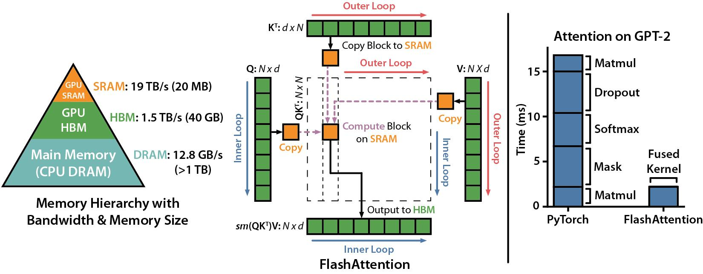
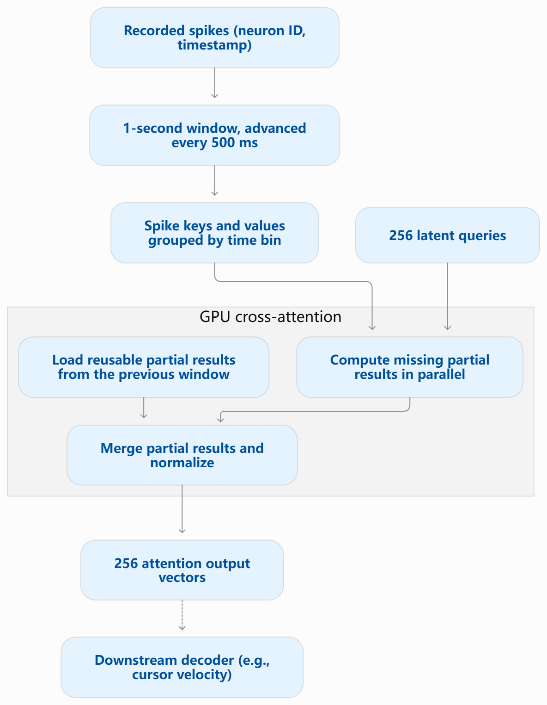

Parallel Computer Architecture and Programming
Streaming Spike-Token Attention for BCI Decoding
Overlapping windows
Project summary
Brain–computer interfaces need to turn neural activity into commands quickly. Models such as POYO process overlapping windows of neural spikes from scratch, so some attention work repeats as the window moves. We’ll compare fresh and cached CUDA implementations on synthetic and recorded spike data to find when reusing partial attention results reduces latency and how GPU tiling and work distribution affect the tradeoff.
Project materials
- Project proposal (PDF)Submitted Mon, Nov 9
- Milestone reportDue Mon, Nov 23
- Final reportDue Thu, Dec 10
- Poster sessionFri, Dec 11, 8:30–11:30 am
From the proposal
Background
A BCI decoder takes a sequence of recorded brain activity and predicts output that a device can use, such as how fast to move a cursor. An attention-based decoder like POYO represents each spike as a token for which neural unit fired and when. It compresses these spike tokens with cross-attention, in which 256 learned latent tokens act as the queries and the spike tokens supply the keys and values, then processes the latent tokens with self-attention and reads out a prediction. POYO decodes more accurately than earlier methods, reaching a velocity R² of 0.948 on the NLB MC_Maze dataset against 0.889 for a GRU (Azabou et al., 2023). However, it processes each 1 s window from scratch as the window slides forward, which makes it much more expensive at inference than recurrent decoders (Ryoo et al., 2025).
Cross-attention is two matrix multiplies with a softmax between them: the scores are S = QKᵀ/√d, each row of S goes through a softmax to give weights P, and the output is O = PV. FlashAttention (Dao et al., 2022) computes these in blocks held in on-chip shared memory and keeps a running maximum and sum for each row, so the full score matrix is never stored (Figure 1). In our case, S has 256 rows and one column per spike, and the number of spikes changes from window to window. Different queries can be processed in parallel because each produces its own output. Split-key attention adds parallelism within a query: several GPU blocks each process a group of spikes, and their partial results are merged afterward, as in Flash-Decoding.

Successive windows also overlap. POYO places 32 queries at each of eight evenly spaced timestamps, so after a 500 ms shift, 128 of the 256 queries keep their timestamps and see the same spikes in the shared 500 ms. We can cache the partial attention results for these query–spike pairs and reuse them in the next window, as long as their scores and values do not change (Figure 2).

From the proposal
The challenge
Our goal is a computation time of at most 10 ms per window, the target for real-time BCI decoding. POYO takes about 30 ms per prediction for the pretrained POYO-1 model and about 10 ms for a single-session model on an RTX 8000 GPU (Ryoo et al., 2025). The main competing model, POSSM, takes about 3.5 ms on the same GPU and 2.4 to 5.7 ms on a CPU. It gets there by replacing full-window attention with a recurrent state-space model that carries information forward between 50 ms chunks instead of recomputing it. We want to keep full attention and make it cheaper, which requires parallelizing an irregular, memory-bound workload.
Caching saves dot products but adds cache reads and maintenance. If all 128 retained queries are reusable and half the spikes carry over, we skip 25% of the dot products, and we want to measure when that saving outweighs the overhead. Load balancing is harder because spike bins contain different numbers of spikes and each query’s softmax depends on all of its bins. Blocks can compute dot products independently, but their partial results must be merged before the query’s output is ready. Giving every bin the same number of blocks leaves cores idle while dense bins finish, so we will assign more blocks to denser bins. For sparse bins, though, each split does few dot products, so writing and merging its partial result becomes a larger share of the work.
Finally, tile sizes trade data reuse against occupancy. Larger tiles let each block reuse keys and values across more queries but use more registers and shared memory, which reduces how many blocks fit on an SM.
From the proposal
Resources
We will write the CUDA attention kernels from scratch and use torch_brain as a reference for spike tokenization and latent query layout: POYO and torch_brain provide a model reference and examples of how spike tokens, latent queries, and variable-length attention are handled.
Flash-Decoding and FlashInfer provide references for splitting the key/value dimension, merging partial results, and scheduling variable-length attention.
FlashAttention-3 provides a reference for overlapping data movement with attention computation on the H100. The FlashAttention inference API shows how to update cached keys and values in place.
NLB MC_Maze_Small gives us freely available neural data from one session from a monkey performing a task (Pei et al., 2021). We will also generate synthetic windows in Python by drawing Poisson spike times for a chosen number of units and firing rates, so that we can set the spike count in each 500 ms bin and the fraction of reusable query–spike pairs independently.
From the proposal
Goals and deliverables
Plan to achieve
We will implement a fresh CUDA version that computes cross-attention from scratch for each window and a cached version that reuses partial results across windows. We will check both against a PyTorch reference and evaluate the following optimizations.
- Cache partial attention across windows. We will compare fresh and cached attention with the same tiling and split policy to isolate the effect of reuse.
- Assign CUDA blocks based on spike count. We will split dense bins across more blocks than sparse bins and compare this with giving every bin the same number of splits.
- Tune tile sizes. We will vary how many queries share each tile of spike keys and values in shared memory and how many spikes each tile holds, with the split policy held fixed.
- We will report median and 99th-percentile latency per window on synthetic windows, where we vary the spike count and the fraction of reusable work, and on consecutive windows from the NLB MC_Maze_Small data.
Hope to achieve
Our stretch goal is to implement cross-attention in under 10 ms budget for as many neuron tokens as possible, scaling beyond what the POYO paper achieved (20k neuron tokens in a 1 second timeslot). This will likely require the following:
- Choose when to use the cache. We will test a policy that uses the window’s spike count and cache hits to choose between reuse and recomputation.
- Overlap loading with computation. If profiling shows blocks waiting on loads, we will load the next spike tile while computing on the current one.
- Reuse prepared keys and values. We will keep keys and values for spikes in the shared 500 ms bin and prepare vectors only for new spikes, timing from spike events through the attention output.
- Search literature for more recent attention optimizations and apply them
From the proposal
Platform choice
We will use CUDA on a single NVIDIA GeForce RTX 2080 GPU on the GHC machines. The query–spike dot products give us many independent operations, while the softmax requires us to combine results across the spike chunks. CUDA lets us control how these tasks map to thread blocks, how much state we write to memory, and how we merge it. This makes it possible to compare extra GPU parallelism, recomputation, and cache traffic on the same hardware.
From the proposal
Schedule
| Week | Work and checkpoint |
|---|---|
| Nov. 7–15 Proposal due Nov 9 |
Submit the proposal on Nov. 9. Confirm the target GPU. Get a few consecutive NLB windows through the basic PyTorch reference. Pick a two-window test case and identify exactly which query–spike pairs should be reusable. |
| Nov. 16–22 | Implement fresh split-key attention. Check it against PyTorch and collect initial latency measurements across spike counts. Use the PyTorch reference to check that reusing the shared bin’s partial result reproduces fresh attention after a 500 ms shift. |
| Nov. 23–29 Milestone due Nov 23 |
Submit the fresh baseline, initial measurements, and the two-window reuse check. Implement the CUDA cache and verify it over consecutive windows in the replay. |
| Nov. 30–Dec. 6 | Compare fresh and cached attention on synthetic windows and the NLB data. Compare fixed and spike-count-based splits, then test tile sizes with the split policy held fixed. If time remains after these comparisons, test the adaptive cache policy if the measurements show a clear crossover. Try overlapping tile loads with computation if profiling shows that loads are a bottleneck. If we can time the replay starting from spike events, test whether reusing prepared keys and values reduces latency through the attention output. |
| Dec. 7–11 Report Dec 10 · Poster Dec 11 |
Rerun any questionable measurements, finish the figures and poster. Submit the report by Dec.10 and present the poster on Dec 11. |